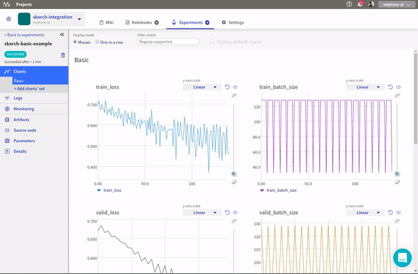

Log Skorch metrics to neptune
{kind=link}
Prerequisites
Integration with Skorch framework is introduced as a part of logging module so just need to have neptune-client installed.
pip install neptune-client
Create an Experiment
Note
I am using a shared, anonymous token but you can change to your user api token.
import neptune
neptune.init(api_token='ANONYMOUS',
project_qualified_name='shared/skorch-integration')
experiment = neptune.create_experiment(name='skorch-basic-example',
params={'max_epochs': 20,
'lr': 0.1},
upload_source_files=['skorch_example.py'])
Create NeptuneLogger callback
Pass the experiment object as first argument.
Note
To be able to log information after the .fit() method finishes remember to pass close_after_train=False
from skorch.callbacks.logging import NeptuneLogger
neptune_logger = NeptuneLogger(experiment, close_after_train=False)
Pass neptune_logger to NeuralNetClassifier
net = NeuralNetClassifier(
ClassifierModule,
max_epochs=20,
lr=0.1,
callbacks=[neptune_logger])
net.fit(X, y)
Log additional information
Log test metrics after training
from sklearn.metrics import roc_auc_score
y_pred = net.predict_proba(X)
auc = roc_auc_score(y, y_pred[:, 1])
neptune_logger.experiment.log_metric('roc_auc_score', auc)
Log performance charts
from scikitplot.metrics import plot_roc
import matplotlib.pyplot as plt
fig, ax = plt.subplots(figsize=(16, 12))
plot_roc(y, y_pred, ax=ax)
neptune_logger.experiment.log_image('roc_curve', fig)
Log trained model
net.save_params(f_params='basic_model.pkl')
neptune_logger.experiment.log_artifact('basic_model.pkl')
Monitor your Skorch training in Neptune
Now you can watch your Skorch model training in neptune!
Check out this example experiment.
{kind=link}
Close experiment
If you passed close_after_train=False to NeptuneLogger you may want to close your experiment when you are done logging.
neptune_logger.experiment.stop()
Full Skorch monitoring script
Simply copy and paste it to skorch_example.py and run.
Remember to change your credentials in neptune.init():
neptune.init(api_token=os.getenv('NEPTUNE_API_TOKEN'),
project_qualified_name='USER_NAME/PROJECT_NAME')
import torch
from torch import nn
import torch.nn.functional as F
torch.manual_seed(0)
# create data
import numpy as np
from sklearn.datasets import make_classification
X, y = make_classification(1000, 20, n_informative=10, random_state=0)
X = X.astype(np.float32)
# create pytorch module
class ClassifierModule(nn.Module):
def __init__(
self,
num_units=10,
nonlin=F.relu,
dropout=0.5,
):
super(ClassifierModule, self).__init__()
self.num_units = num_units
self.nonlin = nonlin
self.dropout = dropout
self.dense0 = nn.Linear(20, num_units)
self.nonlin = nonlin
self.dropout = nn.Dropout(dropout)
self.dense1 = nn.Linear(num_units, 10)
self.output = nn.Linear(10, 2)
def forward(self, X, **kwargs):
X = self.nonlin(self.dense0(X))
X = self.dropout(X)
X = F.relu(self.dense1(X))
X = F.softmax(self.output(X), dim=-1)
return X
# create neptune logger and pass it to NeuralNetClassifier
from skorch import NeuralNetClassifier
import neptune
from skorch.callbacks.logging import NeptuneLogger
neptune.init(api_token='ANONYMOUS',
project_qualified_name='shared/skorch-integration')
experiment = neptune.create_experiment(
name='skorch-basic-example',
params={'max_epochs': 20,
'lr': 0.1},
upload_source_files=['skorch_example.py'])
neptune_logger = NeptuneLogger(experiment, close_after_train=False)
net = NeuralNetClassifier(
ClassifierModule,
max_epochs=20,
lr=0.1,
callbacks=[neptune_logger]
)
# run training
net.fit(X, y)
# log score after training
from sklearn.metrics import roc_auc_score
y_pred = net.predict_proba(X)
auc = roc_auc_score(y, y_pred[:, 1])
neptune_logger.experiment.log_metric('roc_auc_score', auc)
# log charts like ROC curve
from scikitplot.metrics import plot_roc
import matplotlib.pyplot as plt
fig, ax = plt.subplots(figsize=(16, 12))
plot_roc(y, y_pred, ax=ax)
neptune_logger.experiment.log_image('roc_curve', fig)
# log model after training
net.save_params(f_params='basic_model.pkl')
neptune_logger.experiment.log_artifact('basic_model.pkl')
# close experiment
neptune_logger.experiment.stop()